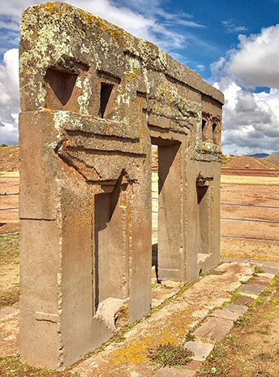
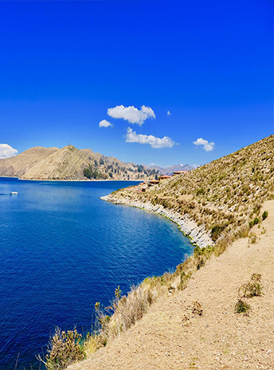
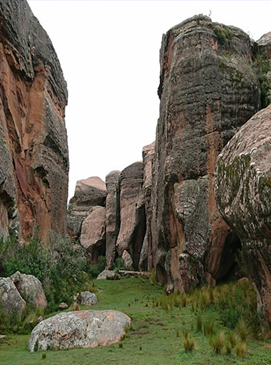
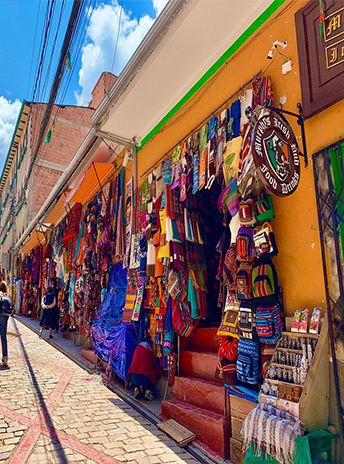

Nuestor Destinos
¿Donde quieres ir?

TIWUANAKU
Tiahuanaco (o Tiwanaku) es una de las civilizaciones precolombinas más longevas y avanzadas de América del Sur.

EL TITICACA
El lago Titicaca se extiende por la frontera entre Perú y Bolivia en la cordillera de los Andes y es uno de los lagos más grandes de Sudamérica

MUSEO DE LA PIEDRA
El Museo de Piedra más destacado de Bolivia es el Pachamama Wasi (Casa de Piedra), ubicado en Torotoro. Cuenta con una impresionante VISTA

MERCADO DE BRUJAS
El Mercado de las Brujas es un mercado callejero ubicado en La Paz, Bolivia. Se encuentra en la calle Linares, en el centro de la ciudad,

¡Una experiencia increíble con Bucket List Bolivia! Hicimos el Tour de 3 días desde Atacama, y nuestro guía, Ever, fue súper atento, siempre pendiente, tomó fotos increíbles, ¡un encanto! Aprendimos muchísimo en este viaje, Ever nos enseñó mucho sobre la cultura boliviana, ¡y fue súper paciente con nosotros!
Jane
Calle Capitán Ravelo No. 2101-(591-2) 2442727-Calle 20 de Calacoto # 1383, entre Av. Ballivián y Julio Patiño
2026 Mi Sitio Web. Todos los derechos reservados.